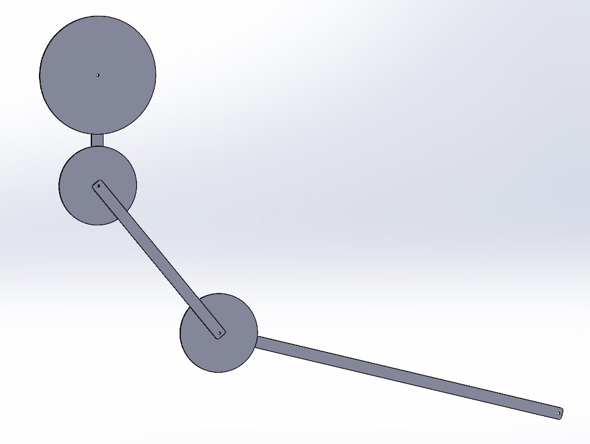

Project
UTS Motorsports Autonomous Hardware
Autonomous vehicle hardware CAD for sensor and electronics mounting, packaging, fabrication templates, DXF preparation, service access, vibration exposure, and vehicle constraints.
UTS Motorsports Autonomous hardware record showing sensor and electronics packaging, CAD templates, DXF preparation, fabrication-aware mounting, serviceability, and vehicle integration constraints.
